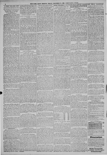

See the full pageVer la página completaGeneral Hyppolite, who came north on a visit” recently, and whoEl general Hyppolite, que vino recientemente al norte en visita, y que
General Hyppolite denied purchasing the Gatling guns and rifles aboard the Ozama, which were invoiced by Schuyler, Hartley & Graham without disclosing the buyer's name, thereby dispelling rumors that the weapons were destined for Puerto Plata for Dominicans anticipating war with Hayti. Meanwhile, anxiety persisted at the Haytian Consulate regarding delayed shipping news, and a separate report detailed Lieutenant E. W. Deering's account that an armed crew of twenty-five men under Captain Henry Williams had been sent to Hayti aboard the Alene on December 8 with sealed orders to take possession of the steamer Haytien Republic.El general Hyppolite negó haber adquirido las ametralladoras Gatling y la fusilería embarcadas en el Ozama, facturadas por la razón social Schuyler, Hartley & Graham sin consignar el nombre del comprador, desvirtuando los rumores que daban por seguro que el armamento marchaba a Puerto Plata para pertrechar a dominicanos prestos a una contienda con Haití. Entretanto, persistía la incertidumbre en el consulado haitiano ante la falta de noticias marítimas, consignando un despacho independiente el informe del teniente E. W. Deering de que veinticinco marineros armados al mando del capitán Henry Williams partieron hacia Haití en el vapor Alene el 8 de diciembre con pliegos reservados para apoderarse del Haytien Republic.
FULL TEXT:TRADUCCIÓN:
MORE FIREARMS FOR HAYTI.MÁS ARMAS DE FUEGO PARA HAITÍ.
A QUEER STORY OF A PRIZE CREW.UNA EXTRAÑA HISTORIA DE UNA TRIPULACIÓN DE PRESA.
MINISTER PRESTON AND OTHERS WILL NOT COMMIT THEMSELVES.EL MINISTRO PRESTON Y OTROS NO SE COMPROMETERÁN.
There were taken to Pier No. 15, North River, yesterday fifty cases of rifles, which were marked "G., Cape Hayti." These rifles, together with nine Gatling guns, are to be shipped on the Clyde steamer Ozama to-morrow, which is to go to Monte Cristo and other places in the West Indies. As it is doubtful that a clearance will be given to the vessel for Cape Haytien, she will probably stop first at Monte Cristo and get a consular certificate there for Cape Haytien, as was done in the case of the Saginaw. It is also reported that General Carvalho, a nephew of General Hyppolite, who came north "on a visit" recently, and who has been staying at the Stevens House, will return as a passenger on the Ozama. He declared yesterday that he had not purchased the Gatling guns and rifles. They were invoiced by Schuyler, Hartley & Graham, who refused to disclose the name of the purchaser.Fueron llevadas al Muelle No. 15, North River, ayer cincuenta cajas de rifles, que estaban marcadas «G., Cabo Haití». Estos rifles, junto con nueve ametralladoras Gatling, han de ser embarcados en el vapor Ozama de la Clyde mañana, que ha de ir a Monte Cristo y otros lugares en las Indias Occidentales. Como es dudoso que se dé un despacho al buque para Cabo Haitiano, probablemente se detendrá primero en Monte Cristo y obtendrá un certificado consular allí para Cabo Haitiano, como se hizo en el caso del Saginaw. También se reporta que el general Carvalho, un sobrino del general Hyppolite, que vino al norte «de visita» recientemente, y que ha estado quedándose en el Stevens House, regresará como pasajero en el Ozama. Declaró ayer que no había comprado las ametralladoras Gatling y los rifles. Fueron facturados por Schuyler, Hartley & Graham, quienes se negaron a revelar el nombre del comprador.
This disposes of the rumor published yesterday that the Ozama was to land these arms at Puerto Plata, presumably for the Dominicans, who anticipated war with Hayti through the aggressiveness of President Heraux, of Santo Domingo. At the Haytian Consulate there was much anxiety for news from Hayti, and the report that the steamer Prinz Mauritz did not sail from Jacmel until Sunday, and would probably not arrive here before Saturday, seemed disturbing.Esto dispone del rumor publicado ayer de que el Ozama iba a desembarcar estas armas en Puerto Plata, presumiblemente para los dominicanos, que anticipaban guerra con Haití a través de la agresividad del presidente Heraux, de Santo Domingo. En el Consulado haitiano había mucha ansiedad por noticias de Haití, y el informe de que el vapor Prinz Mauritz no zarpó de Jacmel hasta el domingo, y probablemente no llegaría aquí antes del sábado, parecía perturbador.
New-York Tribune. New York, December 28, 1888.
See the original at the Library of CongressVer el original en la Biblioteca del Congreso
Published by: New York Tribune, 1866-1924.Publicado por: New York Tribune, 1866-1924.
Edition: Edition 1Edición: edición 1
Page: 2Página: 2
Frequency: daily (1866–1924)Frecuencia: diario (1866–1924)
Collection: Chronicling America, Library of CongressColección: Chronicling America, de la Biblioteca del Congreso
LCCN: sn83030214LCCN: sn83030214
ISSN: 1941-0646ISSN: 1941-0646
OCLC: 9405688OCLC: 9405688
Rights: public domain, according to the Library of CongressDerechos: dominio público, según la Biblioteca del Congreso